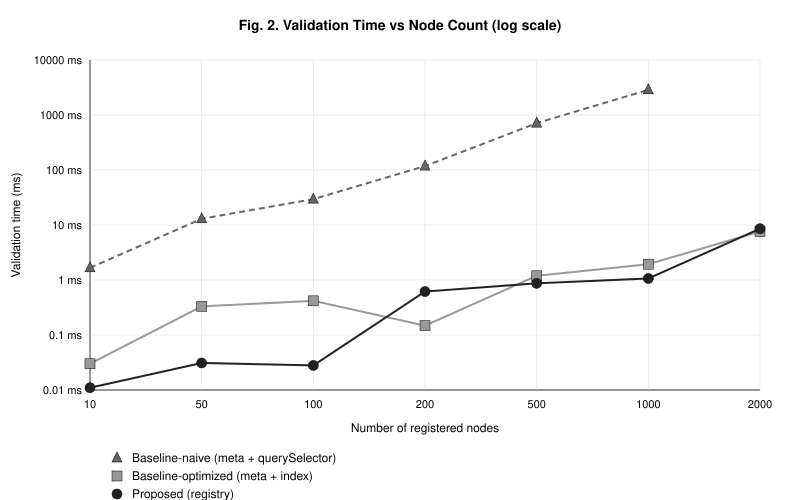
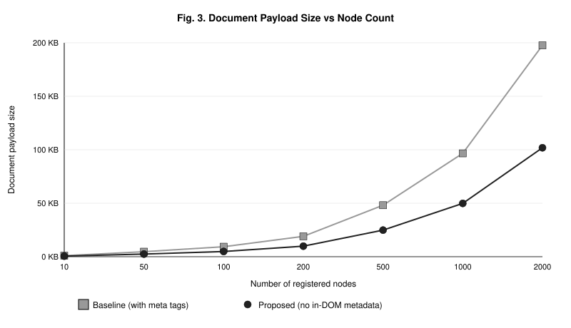
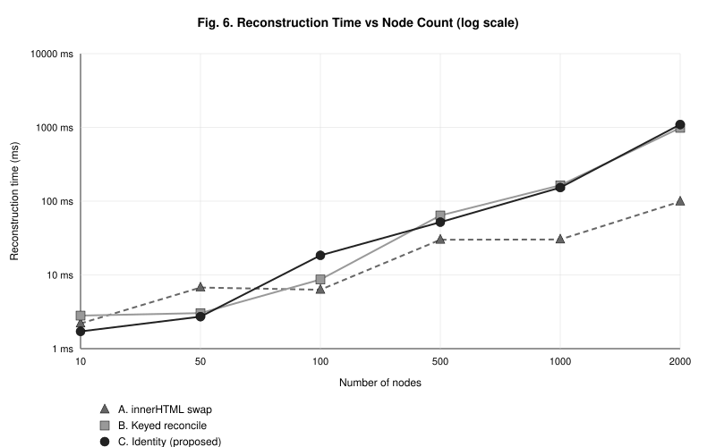
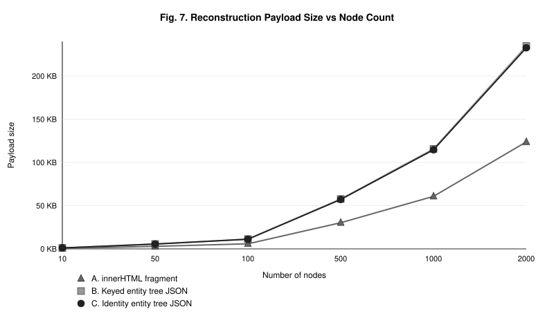

Reference-implementation results for the evaluation (Section 6). Detection outcomes under JSDOM with cross-engine confirmation on Chromium and Firefox. Overhead figures are JSDOM means over 7 runs; absolute timing is environment-dependent and is not claimed. Figures below are the same SVGs generated by the scripts in each case folder.
Scenarios S1–S3 tamper with a property alone; S4 additionally forges the in-DOM <meta> that the baseline uses as its reference. The two models diverge exactly on the evasion scenario.
| Scenario | Attack | Baseline (in-DOM meta) | Proposed (registry) |
|---|---|---|---|
| S1 input.value | direct value forgery | Detected | Detected |
| S2 checkbox.checked | direct forgery | Detected | Detected |
| S3 textarea.value | direct forgery | Detected | Detected |
| S4-a value + meta | co-forgery (evasion) | Bypassed | Detected |
| S4-b checked + meta | co-forgery (evasion) | Bypassed | Detected |
| S4-c textarea + meta | co-forgery (evasion) | Bypassed | Detected |
T1 is an identical-form replacement (stale-subtree): an existing input node is removed and replaced by a new node of identical tag and value. The snapshot baseline sees no difference; the identity model detects the broken binding.
| Scenario | Snapshot-diff | Identity continuity (proposed) |
|---|---|---|
| T1 identical-form replacement (stale-subtree) | Missed | Detected |
| T2 genuine no-op (control) | not flagged | not flagged |
| T3 value mutation | Detected | Detected |
| T4 unauthorized structural insertion | Detected | Detected |
R1 requires runtime state preservation across reconstruction; R2 requires that a new authority-issued identity discards stale state. Only identity reconciliation satisfies both.
| Model | R1 — state preservation | R2 — identity-aware | Combined |
|---|---|---|---|
| innerHTML swap | Lost | Correctly discarded | R2 only |
| keyed reconcile | Preserved | False reuse | R1 only |
| identity reconciliation (proposed) | Preserved | Correctly discarded | R1 + R2 |
The S4 evasion and T1 stale-subtree cases reproduce identically on two real engines. Engine versions are captured at run time.
| Scenario | Expected | Chromium 148.0.7778.96 | Firefox 150.0.2 |
|---|---|---|---|
| S4 evasion forgery (value + meta) | Detected | Detected | Detected |
| T1 identical-form replacement | Detected | Detected | Detected |
| control (valid state) | not detected | not detected | not detected |




Snapshot-diff and identity continuity show comparable validation cost across node counts.
| nodes | 10 | 50 | 100 | 500 | 1000 | 2000 |
|---|---|---|---|---|---|---|
| Snapshot-diff (ms) | 0.266 | 0.914 | 1.626 | 11.828 | 70.806 | 307.74 |
| Identity continuity (ms) | 0.272 | 0.774 | 0.710 | 11.656 | 65.237 | 304.062 |
Detection figures (case1_fig1_detection.svg, case3_fig1_detection.svg, case4_fig1_detection.svg) are available in each case folder; the tables above present the same outcomes.